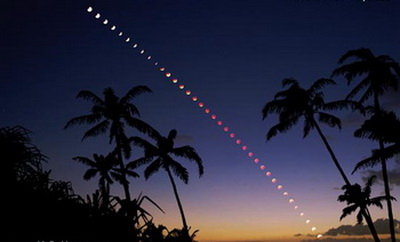

|
|
 |
在看完月蝕的介紹後，我們也可以試著自己觀測月蝕，體驗月蝕的美麗。 |
|
 不像日蝕，月蝕是完全安全觀看的。你不需要任何的保護過濾器。甚至不必使用望遠鏡。你可以直接用雙眼觀看月蝕。 如果你有一副望遠鏡，它們將幫助你放大視圖並使紅色色彩更加明亮易見。一副標準的7×35或7×50雙筒望遠鏡即可。記得穿的暖和並享受這奇觀！ 在月全食時，業餘的天文學家確實可以做一些有用的觀察。在整體上來說，不可能準確地預測出月球會呈現多麼黑暗。 顏色可能是深灰色或棕色，或者一系列紅色或亮橘的色調。顏色及亮度取決於月食時地球大氣層的塵埃數量。 業餘天文學家可以使用Danjon Brightness Scale來分類月球的顏色及亮度。 另外一個有用的業餘活動需要望遠鏡。使用月球隕石坑的清單可以仔細衡量當每個火山口進入和離開本影區的確切的時間。 這些隕石坑計時可以被用來估計地球大氣層因空氣中的灰塵和火山灰的擴大。 當然，月食也展現出一個拍攝的誘人目標。幸運的是，月食攝影很容易，只要你有合適的設備並能正確地使用。 |
|
||||||||||||||||||||||||||||||||||||
網站製作人員：李佩芸、曾郁婷 更新日期：2010/9/02 |
||